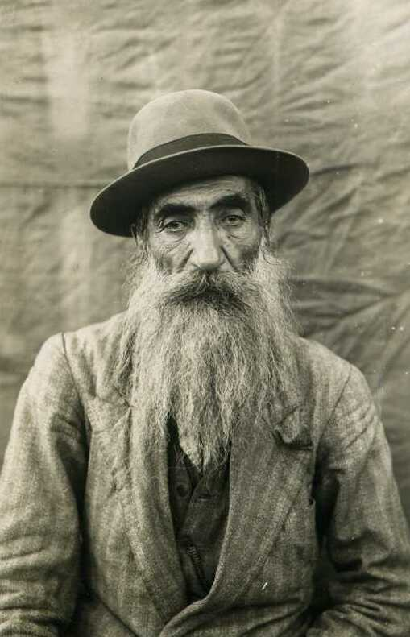
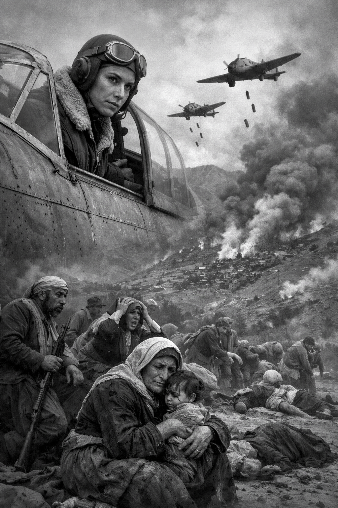
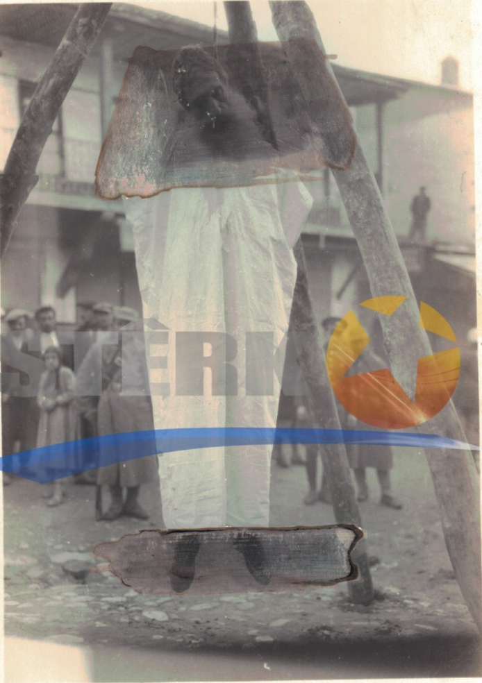
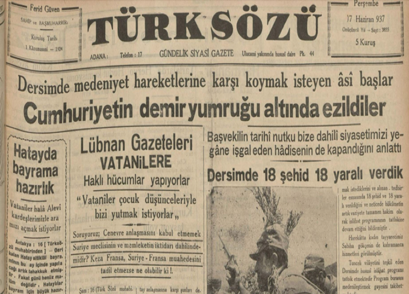
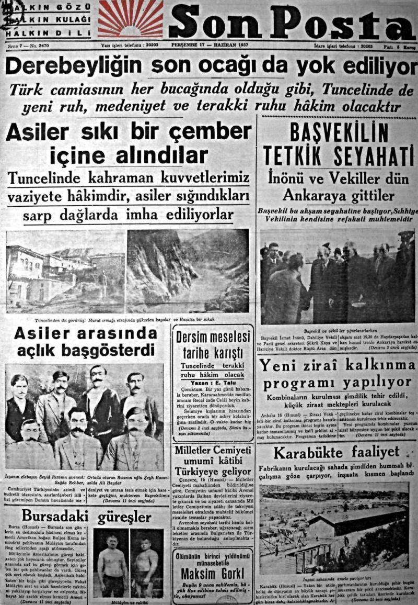
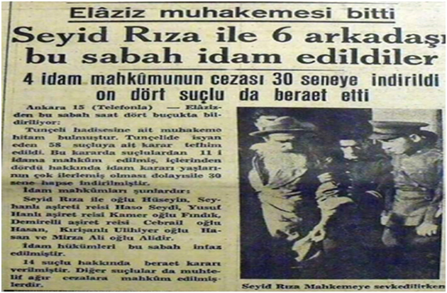
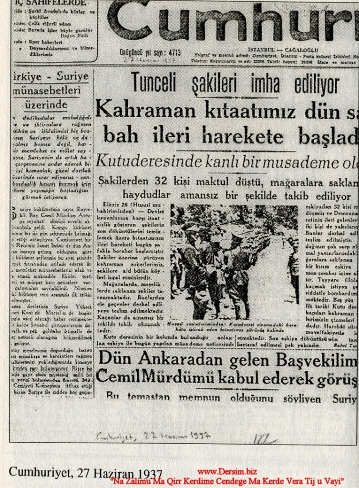

1. Tenkil Kararı ve Hukuki Zemin
- Kararda “tenkil” ifadesi açık biçimde geçer.
- Bölgenin askeri denetimi hedeflenir.
- Sivil-asker ayrımı net değildir.
- Cumhurbaşkanlığı Devlet Arşivleri (BCA)
- Taner Akçam, İsmail Beşikçi
Dersim tarihine dair seçili resmî ve birincil kaynakları merkez eksenli bir zaman çizgisinde bir araya getiren statik arşiv arayüzü.
1937 ve 1938 tek bir birleşik anlatı tasarımıyla sunulur: karar, idam süreci, operasyonlar, tanıklıklar ve kaynaklar aynı akışta toplanır.
“Evlad-ı Kerbelayız, ayıptır, zulümdür, cinayettir.”







